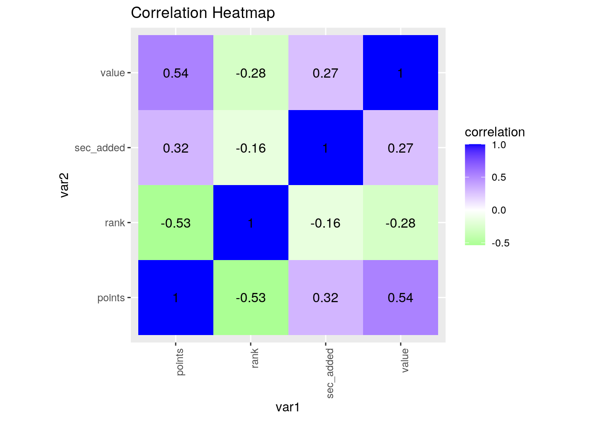
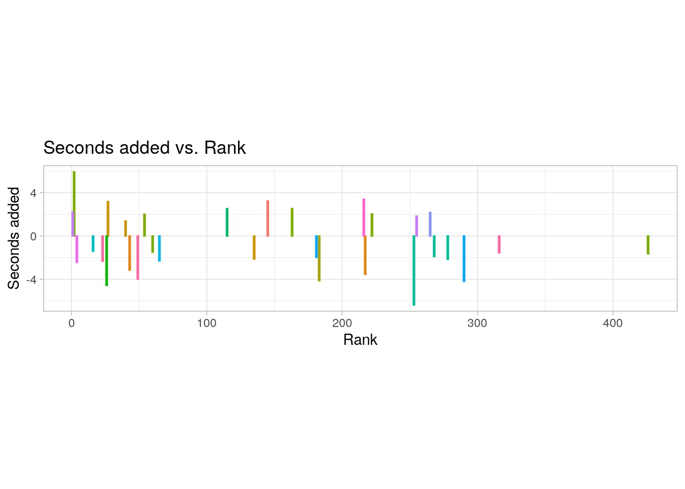
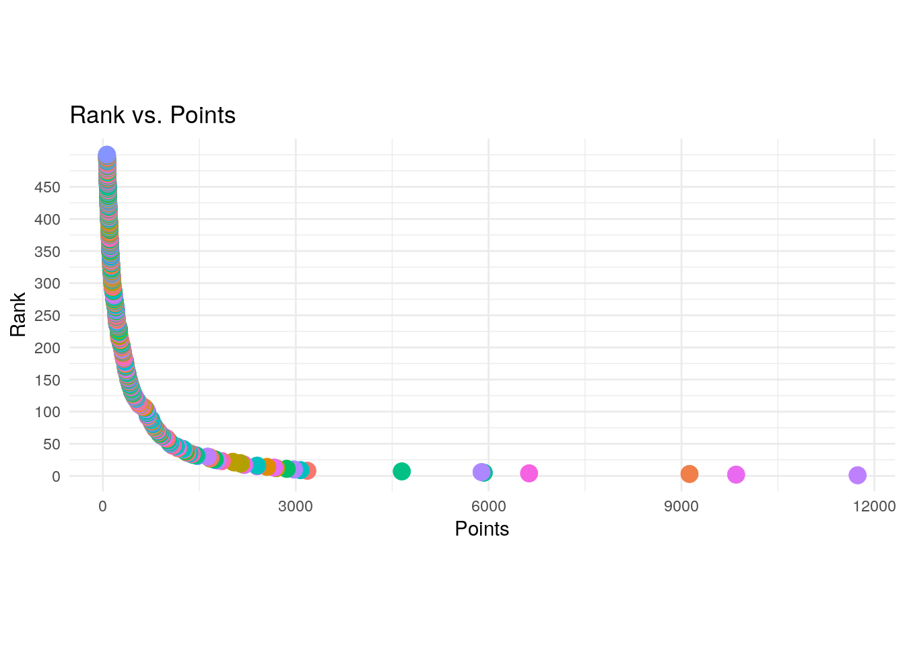
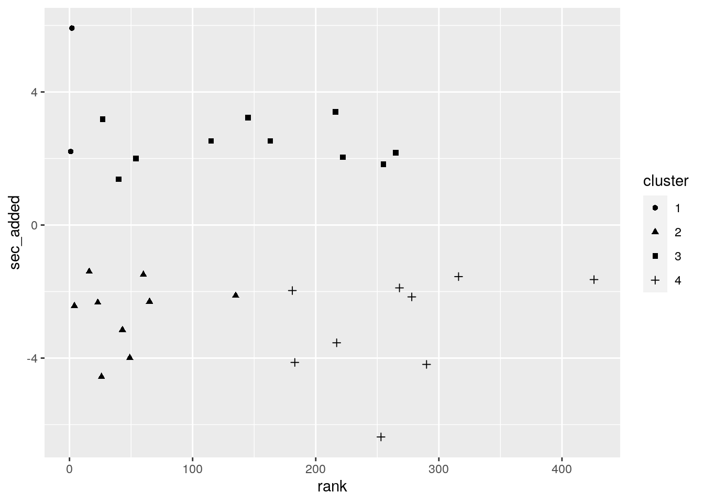
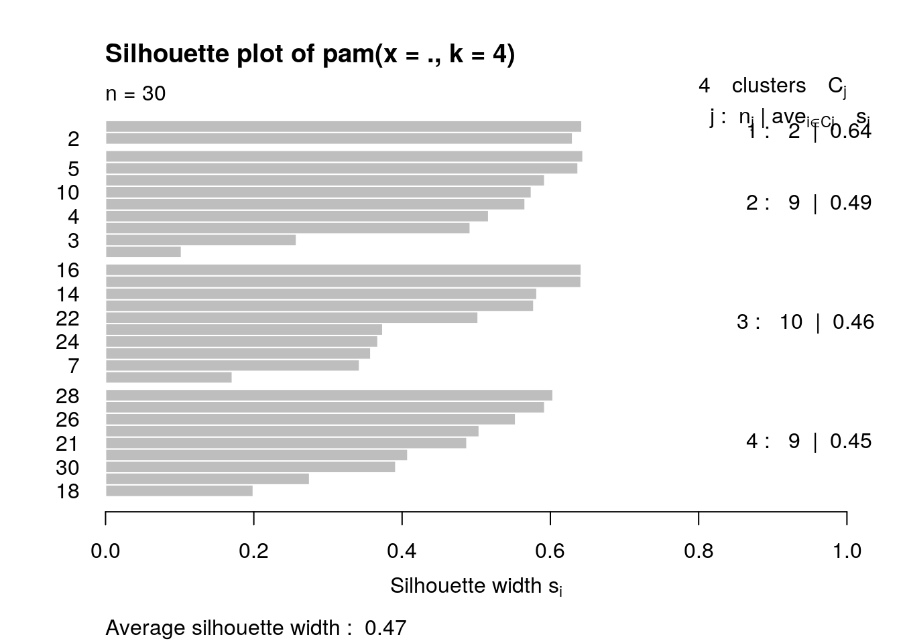

fivethirtyeight. Dataset 2 contains the current top 100 tennis players from the ATP ranking and their statistics including rank number, country and points. I acquired this dataset from https://www.ultimatetennisstatistics.com/rankingsTable. I have been playing tennis for 10 years and keep up with results from Grand Slams, so I was interested in finding datasets about tennis statistics. I do not expect there will be any associations with a player's rank/points and how long they play per point.library(tidyverse)
library(dplyr)
# Dataset 1:
library(fivethirtyeight)
glimpse(tennis_players_time)## Rows: 218
## Columns: 2
## $ player <chr> "Dustin Brown", "Rohan Bopanna", "Chris Guccione", "Benoit …
## $ sec_added <dbl> -6.37, -4.95, -4.63, -4.56, -4.35, -4.25, -4.19, -4.13, -4.…pivot1 <- tennis_players_time %>% pivot_wider(names_from = "player",
values_from = "sec_added")
pivot1 %>% pivot_longer(1:218, names_to = "player", values_to = "sec_added")## # A tibble: 218 x 2
## player sec_added
## <chr> <dbl>
## 1 Dustin Brown -6.37
## 2 Rohan Bopanna -4.95
## 3 Chris Guccione -4.63
## 4 Benoit Paire -4.56
## 5 Lukas Dlouhy -4.35
## 6 Brendan Evans -4.25
## 7 Igor Sijsling -4.19
## 8 Lukas Rosol -4.13
## 9 Alexander Kudryavtsev -4.05
## 10 Sam Querrey -3.99
## # … with 208 more rows# Dataset 2:
library(readxl)
tennis_rankings <- read_excel("tennis_rankings.xlsx")
glimpse(tennis_rankings)## Rows: 500
## Columns: 7
## $ rank <dbl> 1, 2, 3, 4, 5, 6, 7, 8, 9, 10, 11, 12, 13, 14, 15, 16, 1…
## $ name <chr> "Novak Djokovic", "Rafael Nadal", "Dominic Thiem", "Roge…
## $ country_name <chr> "Serbia", "Spain", "Austria", "Switzerland", "Greece", "…
## $ country_id <chr> "SRB", "ESP", "AUT", "SUI", "GRE", "RUS", "GER", "ARG", …
## $ points <dbl> 11740, 9850, 9125, 6630, 5925, 5890, 4650, 3180, 3075, 2…
## $ bestRank <dbl> 1, 1, 3, 1, 5, 4, 3, 8, 8, 10, 6, 10, 9, 7, 10, 9, 8, 3,…
## $ bestPoints <dbl> 16950, 15390, 9125, 12315, 5925, 5960, 6630, 3180, 3075,…tennis_rankings <- tennis_rankings %>% pivot_longer(cols = c("bestRank",
"bestPoints"), names_to = "best", values_to = "value")library(tidyverse)
tennis <- left_join(tennis_rankings, tennis_players_time, by = c(name = "player"))
tennis %>% na.omit()## # A tibble: 60 x 8
## rank name country_name country_id points best value sec_added
## <dbl> <chr> <chr> <chr> <dbl> <chr> <dbl> <dbl>
## 1 1 Novak Djokov… Serbia SRB 11740 bestRank 1 2.21
## 2 1 Novak Djokov… Serbia SRB 11740 bestPoin… 16950 2.21
## 3 2 Rafael Nadal Spain ESP 9850 bestRank 1 5.92
## 4 2 Rafael Nadal Spain ESP 9850 bestPoin… 15390 5.92
## 5 4 Roger Federer Switzerland SUI 6630 bestRank 1 -2.43
## 6 4 Roger Federer Switzerland SUI 6630 bestPoin… 12315 -2.43
## 7 16 Fabio Fognini Italy ITA 2400 bestRank 9 -1.4
## 8 16 Fabio Fognini Italy ITA 2400 bestPoin… 2920 -1.4
## 9 23 John Isner United States USA 1850 bestRank 8 -2.33
## 10 23 John Isner United States USA 1850 bestPoin… 3720 -2.33
## # … with 50 more rowssec_added variable have complete values, which may contribute to a lack of correlation (insufficient data). Arranging based on a descending value gives a list of players who have had the most points of all-time (Djokovic at the top). The 25th, 50th, and 75th quantiles of points are 104.75, 209.50, and 483.25 respectively. I created a new variable of points/sec_added and summarized the quantile for this column (50th percentile = -61.344). n_distinct was used to count all unique values in every column (500 names). The mean rank is 250.5, mean points is 509.748, and mean sec_added is -0.626 sec. All numeric variables' minimum and maximum are calculated using summarize_if. There is a 0.3167 correlation between points and sec_added, which is not a very strong correlation between the variables.tennis %>% filter(best == "bestPoints") %>% summarize(max(value))## # A tibble: 1 x 1
## `max(value)`
## <dbl>
## 1 16950tennis %>% group_by(country_name, best) %>% summarize(min(value))## # A tibble: 122 x 3
## # Groups: country_name [61]
## country_name best `min(value)`
## <chr> <chr> <dbl>
## 1 Argentina bestPoints 88
## 2 Argentina bestRank 3
## 3 Australia bestPoints 99
## 4 Australia bestRank 13
## 5 Austria bestPoints 99
## 6 Austria bestRank 3
## 7 Barbados bestPoints 523
## 8 Barbados bestRank 106
## 9 Belarus bestPoints 424
## 10 Belarus bestRank 65
## # … with 112 more rowstennis %>% group_by(best) %>% summarize(sd(value))## # A tibble: 2 x 2
## best `sd(value)`
## <chr> <dbl>
## 1 bestPoints 1658.
## 2 bestRank 132.tennis %>% select(8) %>% summarize_all(function(x) mean(!is.na(x)))## # A tibble: 1 x 1
## sec_added
## <dbl>
## 1 0.06tennis %>% arrange(desc(value))## # A tibble: 1,000 x 8
## rank name country_name country_id points best value sec_added
## <dbl> <chr> <chr> <chr> <dbl> <chr> <dbl> <dbl>
## 1 1 Novak Djokov… Serbia SRB 11740 bestPo… 16950 2.21
## 2 2 Rafael Nadal Spain ESP 9850 bestPo… 15390 5.92
## 3 115 Andy Murray United Kingdom GBR 547 bestPo… 12685 2.53
## 4 4 Roger Federer Switzerland SUI 6630 bestPo… 12315 -2.43
## 5 3 Dominic Thiem Austria AUT 9125 bestPo… 9125 NA
## 6 18 Stan Wawrinka Switzerland SUI 2185 bestPo… 6865 NA
## 7 145 Juan Martin … Argentina ARG 415 bestPo… 6825 3.23
## 8 7 Alexander Zv… Germany GER 4650 bestPo… 6630 NA
## 9 35 Kei Nishikori Japan JPN 1345 bestPo… 6385 NA
## 10 6 Daniil Medve… Russian Federa… RUS 5890 bestPo… 5960 NA
## # … with 990 more rowstennis %>% summarize(quantile(points))## # A tibble: 5 x 1
## `quantile(points)`
## <dbl>
## 1 63
## 2 105.
## 3 210.
## 4 483.
## 5 11740tennis %>% na.omit() %>% mutate(points_per_addedsec = points/sec_added) %>%
summarize(quantile(points_per_addedsec))## # A tibble: 5 x 1
## `quantile(points_per_addedsec)`
## <dbl>
## 1 -2728.
## 2 -267.
## 3 -61.3
## 4 128.
## 5 5312.tennis %>% summarize_all(n_distinct)## # A tibble: 1 x 8
## rank name country_name country_id points best value sec_added
## <int> <int> <int> <int> <int> <int> <int> <int>
## 1 500 500 61 61 319 2 576 30tennis %>% summarize_at(c("rank", "points", "sec_added"), mean,
na.rm = T)## # A tibble: 1 x 3
## rank points sec_added
## <dbl> <dbl> <dbl>
## 1 250. 510. -0.626tennis %>% summarize_if(is.numeric, list(min = min, max = max),
na.rm = T)## # A tibble: 1 x 8
## rank_min points_min value_min sec_added_min rank_max points_max value_max
## <dbl> <dbl> <dbl> <dbl> <dbl> <dbl> <dbl>
## 1 1 63 1 -6.37 500 11740 16950
## # … with 1 more variable: sec_added_max <dbl>tennis %>% na.omit() %>% summarize(cor(points, sec_added, use = "pair"))## # A tibble: 1 x 1
## `cor(points, sec_added, use = "pair")`
## <dbl>
## 1 0.317points and values at 0.54. rank and points have a correlation value of -0.53, which makes sense because the more points should mean a higher rank (lower number). sec_added and points (0.32) had about the same correlation as sec_added and value (0.27). sec_added and rank (-0.16) had about the same correlation as rank and value (-0.28). No two numeric variables had significant correlations.stat=summary was used to plot the mean sec_added for each rank.cormat <- tennis %>% select_if(is.numeric) %>% cor(use = "pair")
tidycor <- cormat %>% as.data.frame %>% rownames_to_column("var1") %>%
pivot_longer(-1, names_to = "var2", values_to = "correlation")
tidycor %>% ggplot(aes(var1, var2, fill = correlation)) + geom_tile() +
scale_fill_gradient2(low = "green", mid = "white", high = "blue") +
geom_text(aes(label = round(correlation, 2)), color = "black",
size = 4) + theme(axis.text.x = element_text(angle = 90,
hjust = 1)) + coord_fixed() + ggtitle("Correlation Heatmap") +
xlab("var1") + ylab("var2")
tennis %>% na.omit %>% ggplot(aes(x = rank, y = sec_added, color = country_id)) +
geom_bar(stat = "summary", fun = mean) + ggtitle("Seconds added vs. Rank") +
xlab("Rank") + ylab("Seconds added") + coord_fixed(8) + theme_light() +
theme(legend.position = "none")
ggplot(data = tennis, aes(x = points, y = rank, color = country_name)) +
geom_point(size = 4) + ggtitle("Rank vs. Points") + xlab("Points") +
ylab("Rank") + coord_fixed(10) + theme_minimal() + theme(legend.position = "none") +
scale_y_continuous(breaks = c(0, 50, 100, 150, 200, 250,
300, 350, 400, 450))
rank, points, and sec_added, 4 clusters was the optimal number of clusters to minimize within-cluster distance and maximize between-cluster distance. I checked this by finding a k with the highest silhouette width of 0.47. However, the structure is weak and could be artificial. Cluster 1 only contains 2 points, and from the graph, these points do not look separated from cluster 3.# Need to rejoin dataset using original tennis_rankings data
# so there are no duplicate rows.
tennis_rankings <- read_excel("tennis_rankings.xlsx")
tennis <- left_join(tennis_rankings, tennis_players_time, by = c(name = "player"))
# Distance
tennis %>% column_to_rownames("name") %>% select(rank, points,
sec_added) %>% na.omit %>% dist %>% as.matrix %>% head## Novak Djokovic Rafael Nadal Roger Federer Fabio Fognini
## Novak Djokovic 0.000 1890.004 5110.003 9340.0127
## Rafael Nadal 1890.004 0.000 3220.011 7450.0168
## Roger Federer 5110.003 3220.011 0.000 4230.0171
## John Isner Benoit Paire Borna Coric Marin Cilic Nick Kyrgios
## Novak Djokovic 9890.0255 10002.0335 10070.03361 10470.0727 10570.0848
## Rafael Nadal 8000.0318 8112.0423 8180.03866 8580.0853 8680.1016
## Roger Federer 4780.0378 4892.0499 4960.05650 5360.1222 5460.1393
## Sam Querrey Pablo Andujar Feliciano Lopez Ricardas Berankis
## Novak Djokovic 10675.1097 10716.1311 10787.1620 10851.1897
## Rafael Nadal 8785.1313 8826.1541 8897.1921 8961.2252
## Roger Federer 5565.1822 5606.2247 5677.2763 5741.3241
## Andy Murray Ivo Karlovic Juan Martin Del Potro Marcel Granollers
## Novak Djokovic 11193.581 11296.796 11325.916 11374.154
## Rafael Nadal 9303.687 9406.944 9436.084 9484.367
## Roger Federer 6084.015 6187.387 6216.602 6265.020
## Robin Haase Lukas Rosol Illya Marchenko Bernard Tomic
## Novak Djokovic 11411.420 11414.453 11487.012 11489.032
## Rafael Nadal 9521.686 9524.725 9597.386 9599.413
## Roger Federer 6302.486 6305.541 6378.527 6380.556
## Guillermo Garcia Lopez Dustin Brown Janko Tipsarevic Blaz Kavcic
## Novak Djokovic 11491.125 11533.756 11534.797 11547.018
## Rafael Nadal 9601.522 9644.275 9645.320 9657.582
## Roger Federer 6382.726 6425.827 6426.905 6439.293
## Mischa Zverev Matthias Bachinger Igor Sijsling Donald Young
## Novak Djokovic 11555.086 11567.318 11586.607 11609.275
## Rafael Nadal 9665.664 9677.940 9697.283 9720.076
## Roger Federer 6447.407 6459.814 6479.315 6502.490
## Daniel Gimeno Traver
## Novak Djokovic 11663.746
## Rafael Nadal 9775.203
## Roger Federer 6559.588
## [ reached getOption("max.print") -- omitted 3 rows ]# PAM Cluster
library(cluster)
clust_dat <- tennis %>% na.omit %>% select(rank, points, sec_added)
set.seed(348)
pam1 <- clust_dat %>% scale %>% pam(k = 4)
pam1## Medoids:
## ID rank points sec_added
## [1,] 1 -1.2325336 3.6217117 0.9329123
## [2,] 9 -0.8720432 -0.1386385 -0.8300716
## [3,] 17 0.1579291 -0.4243112 1.0381651
## [4,] 27 1.1449859 -0.4922608 -0.5044458
## Clustering vector:
## [1] 1 1 2 2 2 2 3 3 2 2 3 2 2 3 2 3 3 4 4 3 4 3 4 3 3 4 4 4 4 4
## Objective function:
## build swap
## 0.7757006 0.6834801
##
## Available components:
## [1] "medoids" "id.med" "clustering" "objective" "isolation"
## [6] "clusinfo" "silinfo" "diss" "call" "data"pamclust <- clust_dat %>% mutate(cluster = as.factor(pam1$clustering))
pamclust %>% ggplot(aes(x = rank, y = sec_added, shape = cluster,
z = sec_added)) + geom_point()
pam1$silinfo$avg.width## [1] 0.4742179plot(pam1, which = 2)